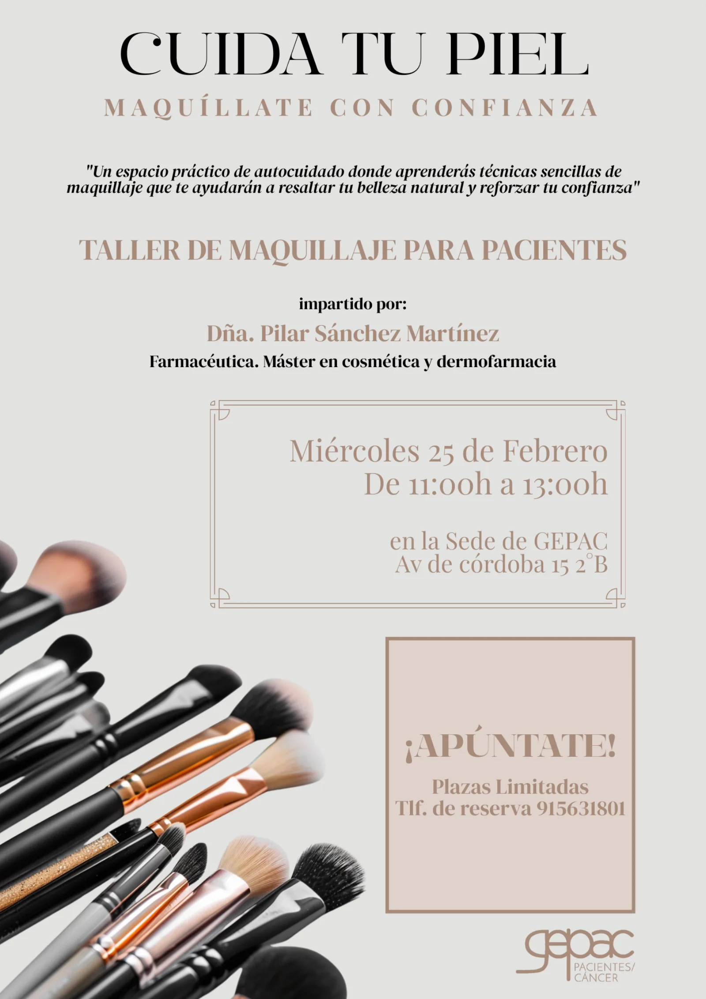

Serie GEPAC – Taller de Maquillaje junto a Pierre Fabre y Skin Cancer GEPAC impulsa un taller de maquillaje y cuidados de la piel para pacientes oncológicos junto a Pierre Fabre y SkinCancer
Serie GEPAC – Taller de Maquillaje junto a Pierre Fabre y Skin Cancer GEPAC impulsa un taller de maquillaje y cuidados de la piel para pacientes oncológicos junto a Pierre Fabre y SkinCancer
El próximo 25 de febrero, de 11:00 a 13:00 horas, el Grupo Español de Pacientes con Cáncer (GEPAC) celebrará un taller de maquillaje y cuidados de la piel dirigido a personas con cáncer. La actividad tendrá lugar en la oficina de GEPAC (Avenida de Córdoba, 15, 2ºB) y se desarrollará en colaboración con Pierre Fabre y SkinCancer, entidades comprometidas con el bienestar integral de los pacientes. Durante el taller, profesionales especializados abordarán rutinas básicas de higiene e hidratación, recomendaciones para la fotoprotección y pautas para elegir productos dermocosméticos adaptados a pieles sensibilizadas. Además, se realizará una sesión práctica de maquillaje enfocada a corregir o disimular los efectos visibles del tratamiento, ayudando a los asistentes a recuperar la confianza frente al espejo y reforzar su imagen personal. La iniciativa se enmarca en el compromiso de GEPAC por promover una atención centrada en la persona, que contemple no solo el abordaje clínico de la enfermedad, sino también aquellas dimensiones que influyen en la calidad de vida. Actividades como este taller favorecen el acompañamiento, la educación sanitaria y el autocuidado, al tiempo que generan espacios de encuentro donde compartir experiencias con otras personas que atraviesan situaciones similares. La colaboración con Pierre Fabre y SkinCancer refuerza el carácter especializado de la jornada, incorporando conocimiento dermatológico y soluciones diseñadas específicamente para pieles vulnerables. Este tipo de alianzas permite acercar recursos de valor a los pacientes y seguir avanzando hacia un modelo de atención más humano e integral. Con este taller, GEPAC continúa trabajando para empoderar a las personas con cáncer, proporcionándoles información fiable y estrategias que les ayuden a afrontar el proceso con mayor seguridad y bienestar.